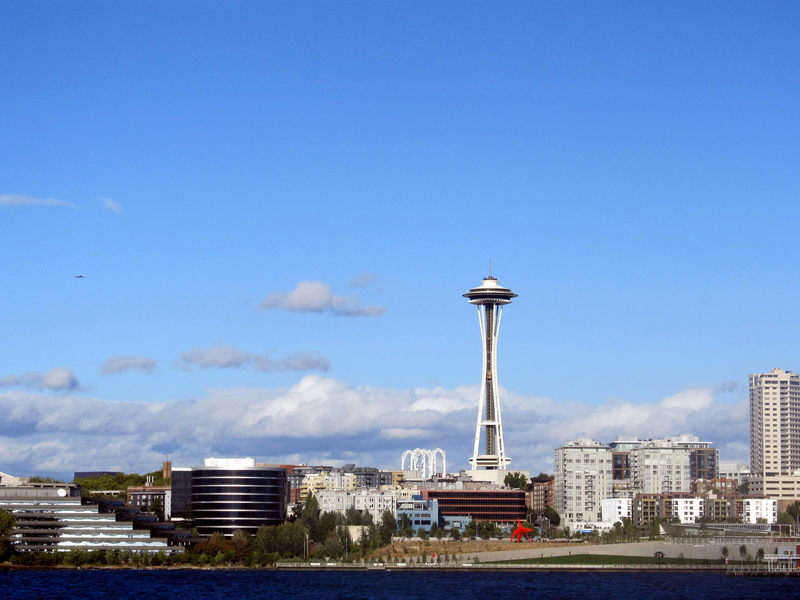
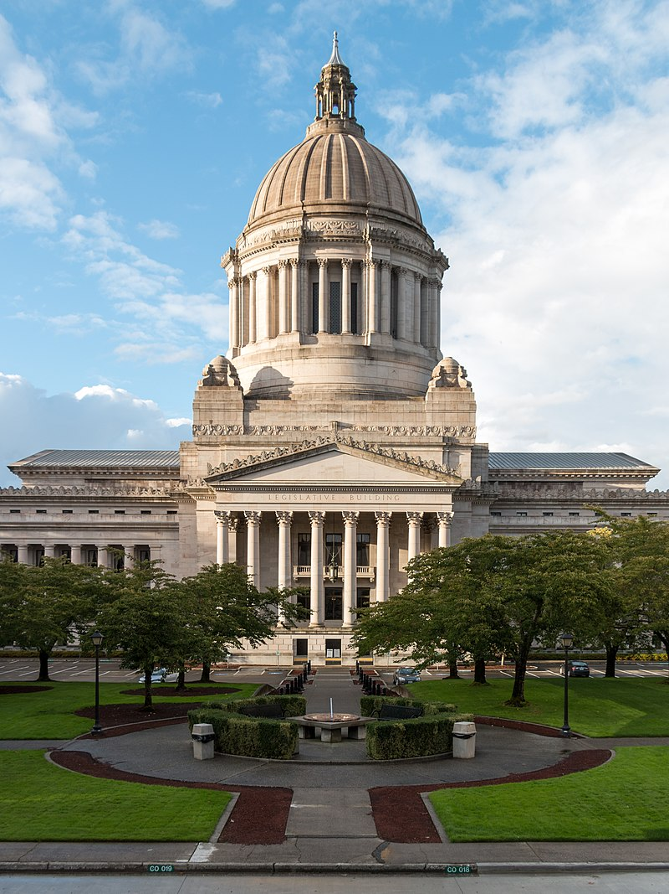

One of the most famous man made atractions in the sate of Washington is the Seatlle Space Needle. The Space Needle is an observation tower in Seattle, Washington, United States. Considered to be an icon of the city, it has been designated a Seattle landmark. Located in the Lower Queen Anne neighborhood, it was built in the Seattle Center for the 1962 World's Fair, which drew over 2.3 million visitors. At 605 ft (184 m) high the Space Needle was once the tallest structure west of the Mississippi River. The tower is 138 ft (42 m) wide, weighs 9,550 short tons (8,660 metric tons), and is built to withstand winds of up to 200 mph (320 km/h) and earthquakes of up to 9.0 magnitude, as strong as the 1700 Cascadia earthquake.
Photo via Good Free Photos
The Seattle Public Library (SPL) is the public library system serving the city of Seattle, Washington. Efforts to start a Seattle library had commenced as early as 1868, with the system eventually being established by the city in 1890. The system currently comprises 27 branches, most of which are named after the neighborhoods in which they are located. The Seattle Public Library also includes Mobile Services and the Central Library, which was designed by Rem Koolhaas and opened in 2004. The Seattle Public Library also founded the Washington Talking Book and Braille Library (WTBBL), which it administered until July 2008.

Ɱ [Ɱ]. (2019, August 25). Main Seattle Library. Wiki Commons. https://en.wikipedia.org/wiki/File:Seattle_Library_01.jpg
The Washington State Capitol (or "Legislative Building") in Olympia is the home of the government of the State of Washington. It contains the chambers of the Washington State Legislature, offices for the governor, lieutenant governor, secretary of state, and state treasurer. It is part of a larger administrative campus including buildings for the Washington Supreme Court, the Washington Governor's Mansion, and many other state agencies.
Kraft, Martin. Legislative Building of the Washington State Capitol, Olympia. 23 Sept. 2013. https://en.wikipedia.org/wiki/Washington_State_Capitol#/media/File:MK03168_Washington_State_Capitol_(Olympia).jpg. Accessed 23 Sept. 2013.